# missing dates plot
# add type NoData (aka no recordings) to Observed and Missing
missing_2024 <- missing_2024 %>%
mutate(ExpectedDate=mdy(ExpectedDate))
NoData <- missing_2024 |>
filter(Battery.status == "OK", SD.card.status == "OK") |>
select(Site, ExpectedDate) |>
rename(
Date = ExpectedDate
) |>
data.frame(Type = "NoData")
all_dates <- all_dates |>
left_join(NoData, by = c("Site", "Date"), suffix = c("", "_new")) |>
mutate(Type = if_else(!is.na(Type_new), Type_new, Type)) |>
select(-Type_new)
# noise plot
noise_coast <- cm[,c(13,16)]
noise_coast$type <- overview_summary$type[match(noise_coast$Site, overview_summary$Site)]
# autoid plot
auto_id_data <- cm[,c(10,13, 15, 16)]
auto_id_data$type <- overview_summary$type[match(auto_id_data$Site, overview_summary$Site)]
# combined bat calls plot
cm <- cm %>%
mutate(DATE.12=ymd(DATE.12))
# activity plot
# adding a column "type"
cm$type <- overview_summary$type[match(cm$Site, overview_summary$Site)]Overview of data collected in the field season of 2024 for coastal monitoring
Summary of 2024

Year in numbers
Number of detectors: 50
Number of detectors that survived the season: 48
Reasons of detector failure: Water damage by humans, seawater damage by other forces
Date of first deployment:2024-06-14 11:46:00
Date of last deployment:2024-07-20 08:33:00
Date of first retrieval: 2024-08-16 12:11:03
Date of last retrieval: 2024-10-17 16:30:00
Days detectors were on the field: 4908
Days with missing data: 320 or 319
% of missing data from all data: ca 6,5
Reasons of missing data:
1) No bats, no noise detected: 19
2) SD card full: 238
Batteries empty: 23
Detector dead: 33
Average time detector deployed: 91.84
# choose PIPNAT
cm_pnat <- cm %>%
filter(autoid == "PIPNAT")
cm_pnat_c <- cm_pnat |>
filter(type == "coast") %>%
filter(month(DATE.12) %in% c(8, 9, 10))
# add median dates
median(cm_pnat_c$DATE.12, na.rm = FALSE)[1] "2024-09-22"median_dates <- cm_pnat_c %>%
group_by(Site) %>%
summarise(median = median(DATE.12, na.rm = TRUE))
median_dates$latitude <-overview_summary$latitude[match(median_dates$Site, overview_summary$Site)]
median_dates <- median_dates %>%
arrange(latitude) %>%
mutate(Site = factor(Site, levels = Site))
cm_pnat_c <- cm_pnat_c %>%
mutate(TIME=as_hms(TIME))
cm_pnat_c <- cm_pnat_c %>%
mutate(TIME.12=as_hms(TIME.12))
# half a month
cm_pnat_c <- cm_pnat_c %>%
mutate(
HalfMonth = case_when(
lubridate::day(DATE) <= 15 ~
paste0(lubridate::year(DATE), "-", sprintf("%02d", lubridate::month(DATE)), "-H1"),
TRUE ~
paste0(lubridate::year(DATE), "-", sprintf("%02d", lubridate::month(DATE)), "-H2")
)
)
#check for duplicates
#dim(cm_pnat_c[duplicated(cm_pnat_c$filename),])[1]Deployment times
This is a graph that shows the days with missing data and how long the detectors were in the field.
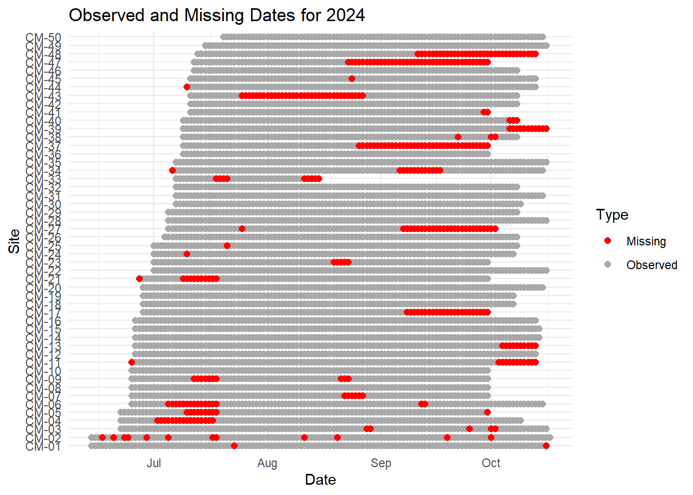
Noise
Figure 2 Shows the proportion of noise in all the sites. We can see that some of the sites are a lot noisier than others and Figure 3 shows that coastal sites tend to have more noise.
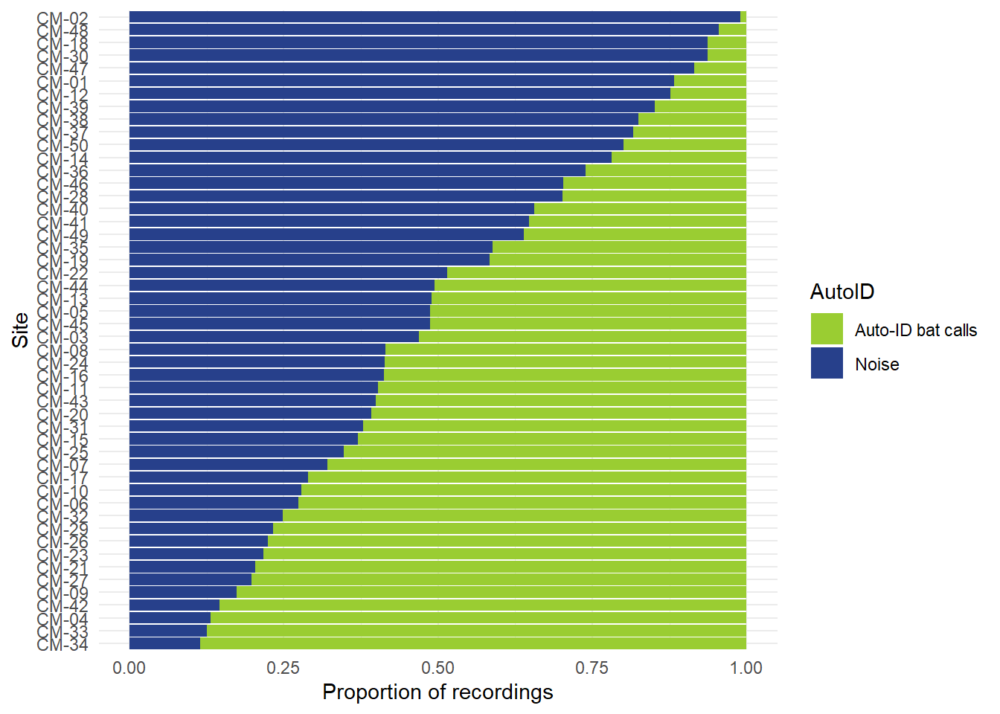
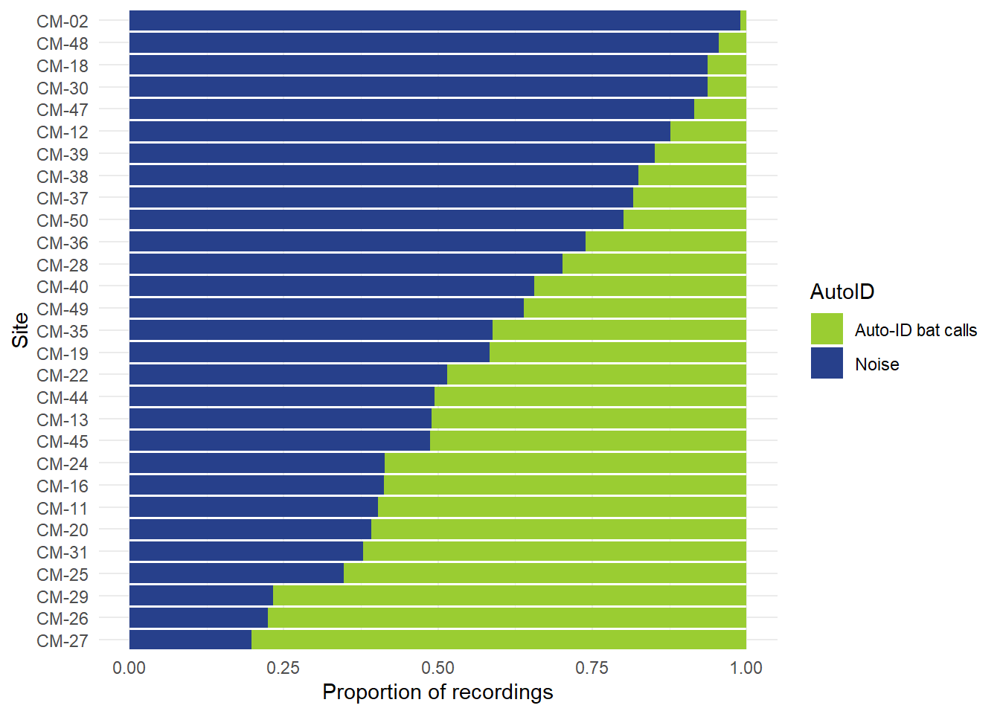
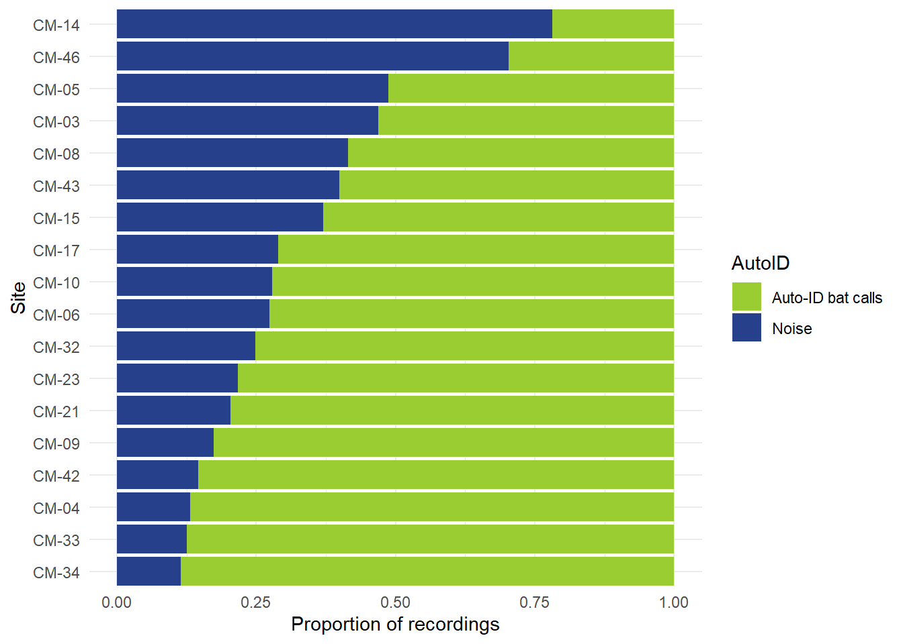
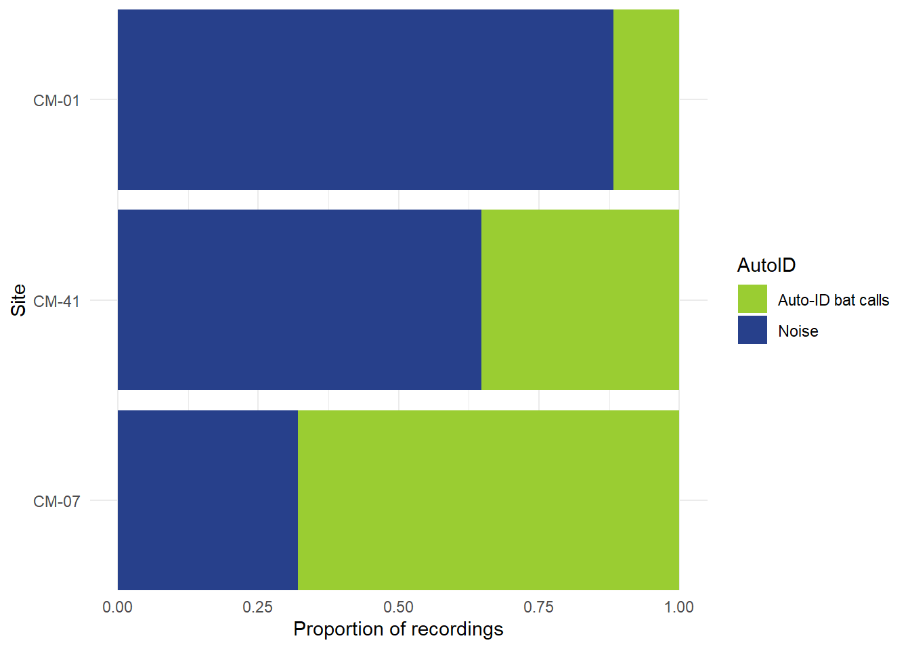
If we look at the total amount of 5 second recordings on Figure 4 , then the amount of noise varies less, with CM-12 being an extra noisy location. The best overview of how locations differ gives Figure 5. We can see that the number of recordings we can work with is times bigger in lake sites than in coastal sites.
In terms of how to distribute sites to different classes, I have made a third, “inland” class that doesn’t really fit under the two others, with CM-01 (Utsira lighthouse), CM-07 (Raulemyra) and CM-41 (NMBU campus). Coastal sites are sites up to 400m from the coast, the furthest away being CM-25 near Brusand with 380 meters. There is also one lake site that falls into the 400m cutoff, CM-34 (Guitarmuseum) that is 280m from the coast. As for the inland sites, CM-01 is 600m from the coast and 480m from a freshwater lake, CM-07 is 9000m from the coast and 230m from a bigger freshwater source, CM-41 is 2230m from the coast and 100m from a bigger freshwater source.
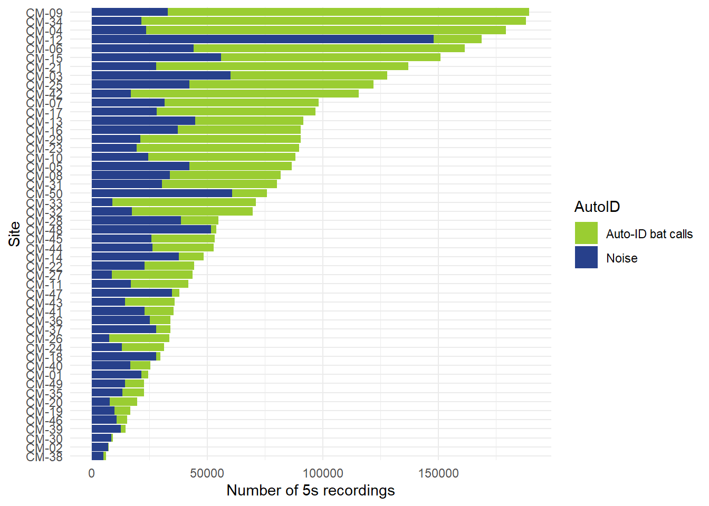
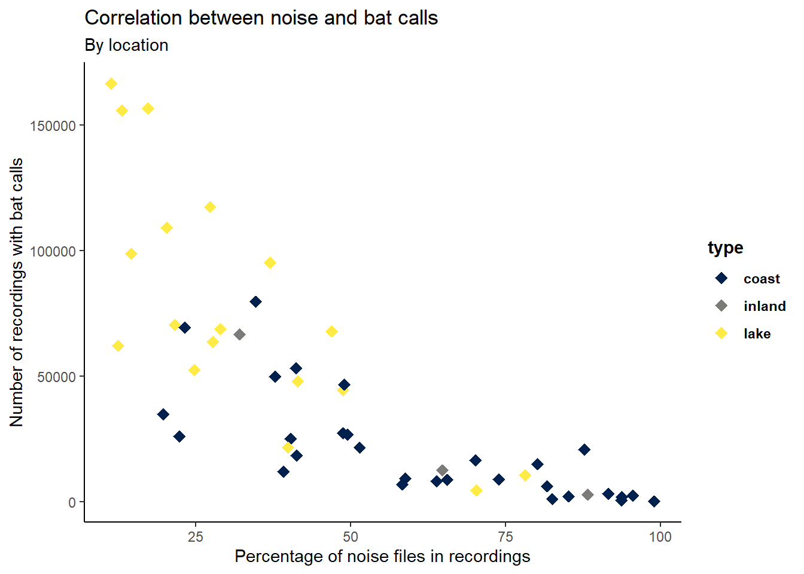
AUTO-ID bats
While the combined auto-id Figure 6 doesn’t give us a very detailed picture of what species are present, we can still get a proxy of the amount of recordings and species from it. When we compare the coast and the lakes, we can see that the amount of calls differs a lot (Figure 7). Out of the top 4 coastal locations, top 2 are next to big rivers (Obrestad Prestegård, Brusand), third one is a fjord that looks like a lake (Framvaren) and fourth one is very sheltered from the sea (Stapnes bedehus).
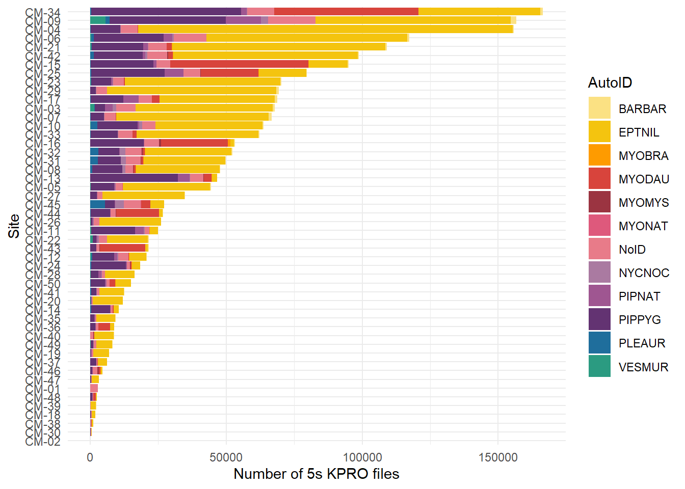
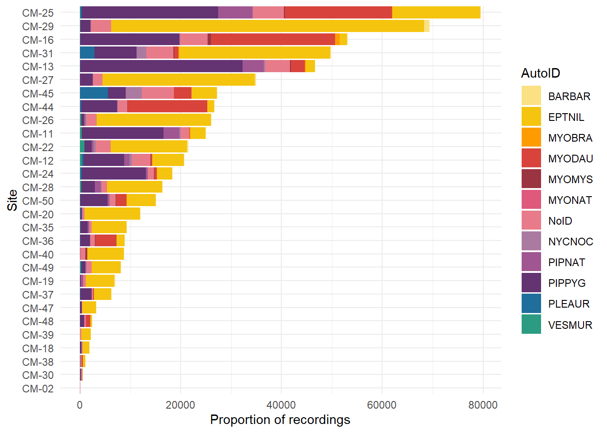
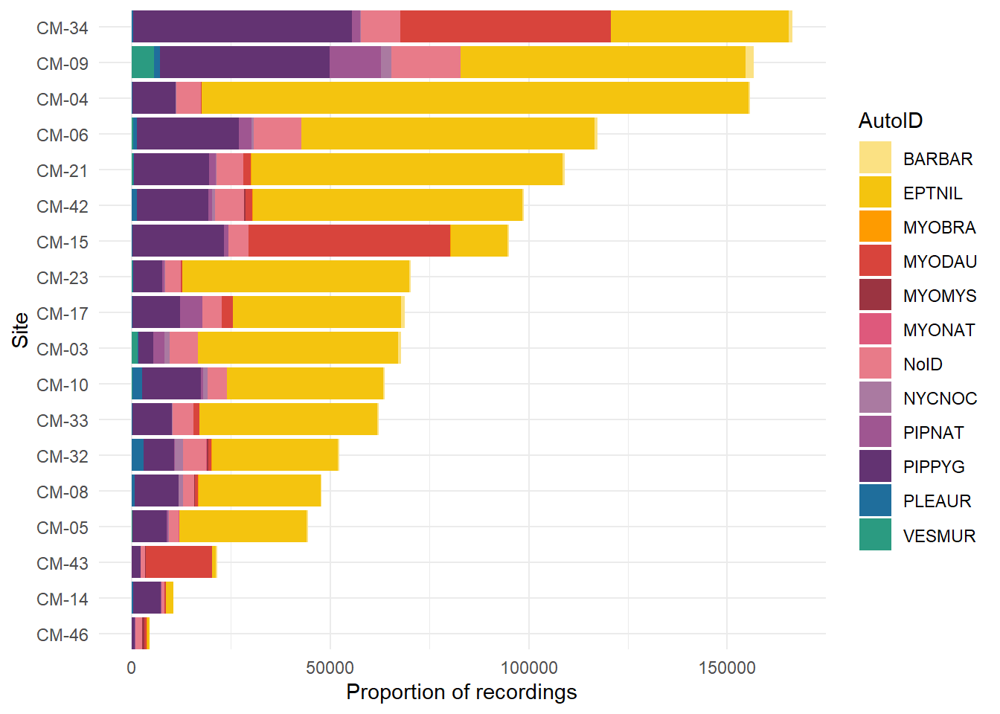
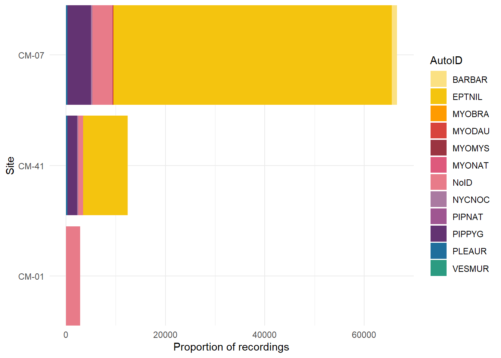
Occurrance of calls
We can see on Figure 8 that in September, the amount of calls recorded, starts to drop. The very beginning of the graph and end on the graph show that not all the detectors were out, that’s why the amount of calls was lower.

Over all the sites, the northern bat activity


Over all the sites, the nathusius’ pipistrelle activity


Over all the sites, the soprano pipistrelle activity


Over all the sites, the daubentons’ bat activity

Nathusius’ pipistrelle distribution
Nathusius’ pipistrelle median activity on the coastal sites from N to S by from August to retrieval.
ggplot(median_dates) +
aes(x = `median`, y = `Site`) +
geom_point(size = 3.35,
shape = "diamond") +
scale_color_viridis_d(option = "cividis", direction = 1) +
labs(x = "Median activity date",
y = "Site", title = "Median activity by site", subtitle = "From N to S") +
theme_classic() +
theme(legend.text = element_text(face = "bold"), legend.title = element_text(face = "bold"))
ggplot(cm_pnat_c) +
aes(x = DATE.12) +
geom_histogram(bins = 30L, fill = "#112446") +
theme_minimal() +
facet_wrap(vars(Site))
Diurnal activity patterns on the coast every half month from August to October.
cm_pnat_c %>%
filter(DATE.12 >= "2024-08-01" & DATE.12 <= "2024-10-15") %>%
ggplot() +
aes(x = HOUR.12) +
geom_histogram(bins = 30L, fill = "#112446") +
theme_minimal() +
facet_wrap(vars(DATE))
cm_pnat_c %>%
filter(DATE.12 >= "2024-08-01",
DATE.12 <= "2024-10-15") %>%
ggplot(aes(x = HOUR.12)) +
geom_histogram(bins = 30, fill = "#112446") +
theme_minimal() +
facet_wrap(vars(HalfMonth))
tilesURL <- "http://server.arcgisonline.com/ArcGIS/rest/services/Canvas/World_Light_Gray_Base/MapServer/tile/{z}/{y}/{x}"
basemap <- leaflet(width = "100%", height = "400px") %>%
addTiles(tilesURL)
basemap %>%
addMinicharts(
overview_summary$longitude, overview_summary$latitude,
chartdata = overview_summary$pnatcalls,
showLabels = TRUE,
width = 45
)